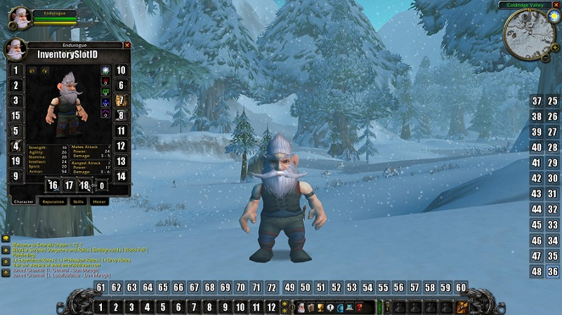

Warrior
This guide is focused around Fury. Arms & Protection will be added at a later date.
Warriors are either in a role of tanking or melee DPS. Warriors have a huge variety of damage-mitigating and threat-producing abilities which allow them to be extremely effective as tanks, and thus were long expected to tank any PvE group they were in. They have since gained respect as single-target melee DPS in PvE and especially PvP. Warriors are, more than any other class, dependent upon the gear they have equipped – a level 60 warrior will often carry around two entire sets of armor and a number of weapons. Unlike other classes (except Bear Form druids), warriors use Rage to perform special abilities, which is generated by dealing and taking damage, and must be built up during a fight to perform special abilities. Because this rage dissipates over time, warriors can maximize their damage output by constantly going from fight to fight.
Warriors 3 talent specializations are Arms, Fury, and Protection.
If you'd like a more in-depth look at the Warrior class, check out the video below.
Talents
Fury
17/34/0 ↗
This is your bread & butter spec for Fury DPS at level 60.
When your spec is sorted and you are ready to begin, it’s really important that when you engage any boss you should always try to be in Berserker Stance because it increases your chance to score a critical strike by 3%, that you always have a proper positioning, by that i mean that you should always try to hit the boss from behind (bosses can’t block or parry from behind), unless situation dictates otherwise. (Dragons usually have tail swipe ability which will knock you to the ground and stun you for certain amount of time), so you should position yourself at one of their rear legs and still hit them from behind)
Fury DPS Priorities
- Execute - use whenever you see execute highlighted or available on your bars.
- Bloodthirst - use on cooldown
- Whirlwind - use on cooldown
- Heroic Strike - This ability is queued as your next melee swing, you should use it if your bloodthirst and whirlwind are on cooldown
- Overpower - A situational ability that’s only usable if your target dodges for a short amount of time (5 second period). However overpower can’t be dodged, blocked or parried. It can miss but if you have yellow hit cap (which you should definitely have) it will never happen. Also overpower has 50% more chance to crit when talented, which is extremely useful to keep up your Flurry up.
Essentially you should never overpower if you have above 45 rage, but in some rare occasions you will have your bloodthirst and whirlwind on cooldown (for more then 3 seconds) and you will be over 45 rage, at that point you should actually use overpower because its pretty much free damage.
source: legacy-wow.com
Pre-Raid Gear
Gearing up is definitely an important part because you really want to have proper stat balance on your gear in order to maximize your dps. By that i mean that stacking just 1 stat won’t bring you better results then having a properly balanced gear.
- Helm: Lionheart Helm (Blacksmithing) BiS through all Classic > Mask of the Unforgiving (Strath Live)
- Neck: Imperial Jewel (BRD)
- Shoulder: Truestrike Shoulders (UBRS)
- Cloak: Cape of the Black Baron (Strath Undead)
- Chest: Deathdealer's Breastplate (BRD)
- Wrist: Battleborn Armbraces (UBRS)
- Gloves: Edgemaster's Handguards (BOE) > Reiver Claws (LBRS)
- Belt: Omokk's Girth Restrainer (LBRS Quest)
- Legs: Cloudkeeper Legplates (BOE)
- Boots: Bloodmail Boots (Scholo)
- Ring: Blackstone Ring (Mara Princess)
- Ring: Painweaver Band (UBRS)
- Trinket: Hand of Justice (BRD) BIS all through Classic
- Trinket: Blackhand's Breadth (UBRS Quest)
- Main-Hand Weapons:
- Ironfoe (BRD) - With Devilsaur set and not with Edgemasters.
- Dal'Rend's Sacred Charge (UBRS) - Combine with OH for 50ap set-bonus!
- Thrash Blade (Mara Quest)
- Off-Hand Weapons:
- Felstriker (UBRS)
- Dal'Rend's Tribal Guardian (UBRS) - Combine with MH for 50ap set-bonus!
- Thrash Blade (Mara Quest)
- Ranged:
- Satyr' Bow (DM East)
- Blackcrow (LBRS)
Note: Weapon skill is extremely important. Therefore if a Race/Edgemasters is listed next to a weapon it is only in that spot with these items
source: legacy-wow.com
Stat Priorities
- Hit
- Crit / Strength
You shold reach the soft hitcap (8%) as soon as possbile. Your abilities can no longer miss at this point.
You should stack as much hit as possible, because most of your damage comes from white hits (auto attacks).
You should use a fast offhandm because Whirlwind doesn't use your offhand in Classic. It's also better for
rage generation.
I strongly recommend downloading the addon Theorycraft. This will expand the ingame tooltip of your spells and give detailed information about the items you’re wearing and their effect on your spells.
Enchants
Ensuring you have the proper enchants on your gear not only will ensure you are maximizing your DPS output, but will also make sure you are taken seriously.
- Helm: Arcanum of Rapidity > 8 Strength
- Shoulder: +5 All Resistance
- Cloak: +3 Agility
- Chest: Greater Stats
- Wrist: +9 Strength
- Gloves: 1% Haste
- Legs: Arcanum of Rapidity > 8 Strength
- Boots: 8% run speed increase. (Mobility is alot better than 7agi).
- Main-Hand Weapon: Crusader (No question about this one).
- Off-Hand Weapon 2.0 speed or slower: Crusader
- Off-Hand Weapon 1.9 Speed or faster: 5str (due to the PPM-nature of Crusader, and offhand not producing any special attacks that aren't affected by PPM, 15str is probably the better choice for fast Offhands).
source: St0rfan's Fury Warrior Guide
Consumables
There are 3 types of consumables you'll be using:
Offensive Consumables:
- Elixir of the Mongoose
- Elixir of Giants
- Elixir of Brute Force
- Smoked Desert Dumplings
- Winterfall Firewater
- Juju Power
- Juju Might
- Scroll of Agility IV
- Scroll of Strength IV
- R.O.I.D.S
- Ground Scorpok Assay
- Elemental Sharpening Stone - (Note: These are must for offhand, while horde because of windfury totem doesn’t have anything applied on their main hand, if there is no shaman in the group naturally you should apply it to your main hand as well)
- Limited Invulnerability Potion – drop all aggro temporarily.
Defensive Consumables
- Rumsey Rum Black Label
- Gordok Green Grog
- Elixir of Fortitude
- Flask of the Titans
- Lung Juice Cocktail
- Windblossom Berries
- Scroll of Stamina IV
Situational defensive buffs where you use protection from certain magic school:
- Greater Arcane Protection Potion
- Greater Fire Protection Potion
- Greater Frost Protection Potion
- Greater Nature Protection Potion
- Greater Shadow Protection Potion
source: legacy-wow.com
Macros
Start-Attack Macros
(by pressing your ability you instantly start auto atacking), note that for these to work you must drag your autoattack ability from spell book to where ever you see fit on your bars and use this image to adjust them. For these macros, I have my auto-attack in slot 36 (bottom right) on my action bars.
Bloodthirst
/script if not IsCurrentAction(36) then UseAction(36) end;
/cast Bloodthirst(Rank 4)
Heroic Strike
/script if not IsCurrentAction(36) then UseAction(36) end;
/cast Heroic Strike(Rank 8)
Whirlwind
/script if not IsCurrentAction(36) then UseAction(36) end;
/cast Heroic Strike(Rank 8)
You can easily see the pattern, you can make macros like this for abilities like hamstring, execute or even battle shout, whatever you find suitable.
Weapon Swap Macros
Battle Stance
/script WeaponSwap(“Weapon Name Here”, “Weapon Name Here”)
/cast Battle Stance
This will Equip both weapons, and it will cast Battle Stance, without using 2 global cooldowns. Same can be used for Berserker stance, just chance the stance name in the macro.
Defensive Stance
/equip Weapon-Name-Here
/equip Shield-Name-Here
/cast Defensive Stance
This will Equip both weapon and shield, and it will cast Defensive Stance, without using 2 global cooldowns.
Why are these weapon swap macros useful? Well, lets say that something bad happens during a boss encounter, for example your offtank dies and he is tanking something that is not taunt immune.
You can easily equip a shield and simultaneously go defensive stance and taunt without using 2 global cooldowns, this allows your reaction time to be a lot faster thus possibly preventing a wipe. Also when the mob that you are tanking dies, you can easily swap back.
source: legacy-wow.com